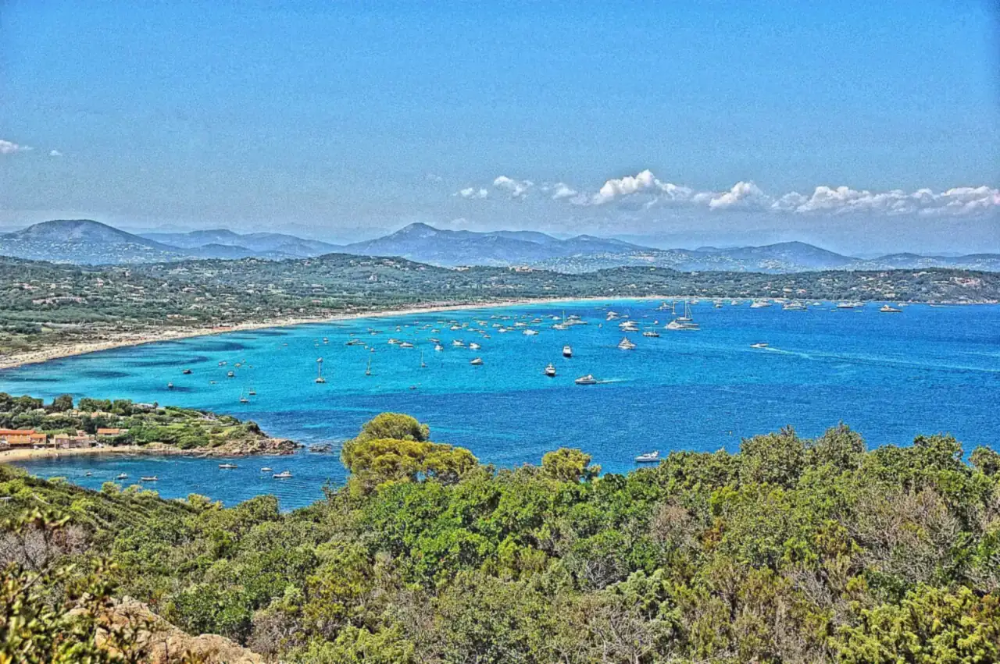

Plage de Pampelonne
Ramatuelle, Var, France · baignade, paddle

Longue plage de sable d’environ 4,5 km sur la presqu’île de Saint-Tropez, ouverte sur la baie de Pampelonne. L’eau descend en pente douce, idéale pour nager et faire du paddle quand la mer est calme.
- Lieu
- Ramatuelle, Var, France
- Niveau
- Débutant
- Activités
- baignade, paddle
- Type d'eau
- Mer / océan
- Coordonnées
- 43.23, 6.67 (position approximative du secteur)
Dangers à connaître
- Jet-skis et bateaux au-delà de la zone de baignade balisée.
- Le mistral et le vent d’est lèvent vite un clapot.
- Méduses certains étés.
Le conseil d'Ocean Buddy
Préfère le matin et les secteurs sans clubs de plage ; pour sortir en paddle, utilise les chenaux balisés.
Ouvrir dans Ocean Buddy Télécharger sur l'App Store
Source : Fiche Ocean Buddy · septembre 2026 · à vérifier localement.